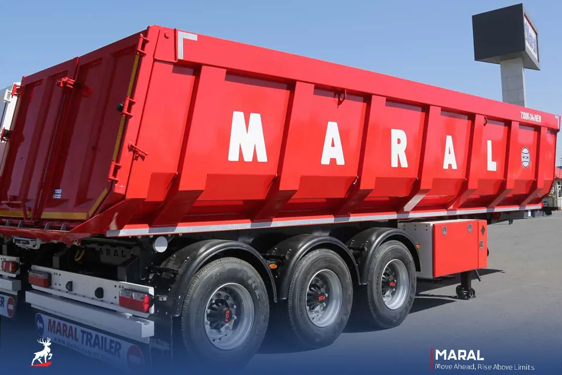

01اول مأموریت، بعد تریلر
هر بار،
یک راهحل مهندسی.
کار شما نقطه شروع است. نوع بار را انتخاب کنید تا محصول مرتبط و جزئیات آن را ببینید.
انتخاب بر اساس کاربرد است؛ تناژ مجاز و انطباق نهایی باید توسط تیم فنی تأیید شود.
02فراتر از یک عکس
مهندسی را لمس کنید.
MARAL / TIPPERتصویر رسمی محصول

01 / 04
بدنه ↔ ساختار
تصویر فنی مفهومی است؛ نقشه ساخت، شبیهسازی مهندسی یا دستورالعمل بهرهبرداری نیست.
SETAEI × MARAL
01 / CHASSIS
03از اولین بار تا مسیرهای بعدی
خرید، شروع
همراهی است.
مسیر درست را انتخاب کنید؛ برای خرید یک تریلر، تجهیز ناوگان یا پیدا کردن خدمات محصول فعلیتان.